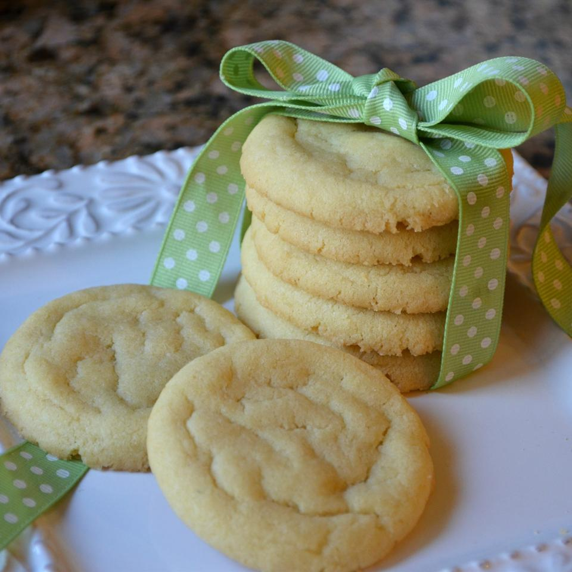

Cracked Sugar Cookies

A nice soft center sugar cookie.
A classic sugar cookie recipe that will yield 24 servings.
Easy preparation with a brief ingredient list.
Ingredients
- 1 1/4 cups white sugar
- 1 cup butter
- 3 egg yolks
- 1 teaspoon vanilla extract
- 2 1/2 cups all-purpose flour
- 1 teaspoon baking soda
- 1/2 teaspoon cream of tartar
Steps
- Preheat oven to 350 degrees F (180 degrees C). Lightly grease 2 cookie sheets.
- Cream together sugar and butter. Beat in egg yolks and vanilla.
- Add flour, abking soda, and cream of tartar. Stir.
- Form dough into walnut size balls and place 2 inches apart on cookie sheet. Don't flatten. Bake 10 to 11 minutes, until tops are cracked and just turning color.